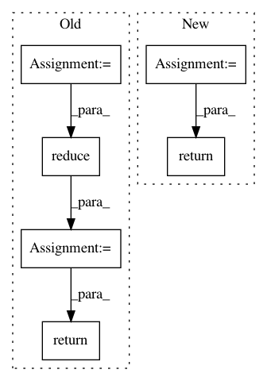

73675264dd48387319f62780b52d81389016cc1f,neurosynth/base/dataset.py,FeatureTable,get_features_by_ids,#FeatureTable#Any#Any#Any#Any#,602
Before Change
def get_features_by_ids(self, ids=None, threshold=0.0001, func="sum", get_weights=False):
""" Returns features that mach to ids"""
id_indices = np.in1d(self.ids, ids)
data = self.data.toarray()
ids_weights = reduce(lambda x,y: x+y, data[id_indices,:])/len(id_indices)
above_thresh = (ids_weights >= threshold)
features_to_keep = np.array(self.feature_names)[np.where(above_thresh)]
if get_weights:
return dict(zip(features_to_keep, list(ids_weights[above_thresh])))
else:
return features_to_keep
After Change
def get_features_by_ids(self, ids=None, threshold=0.0001, func=np.mean, get_weights=False):
""" Returns features for which the mean loading across all specified studies (in ids)
is >= threshold. """
weights = self.data.ix[ids].apply(func, 0)
above_thresh = weights[weights >= threshold]
return above_thresh if get_weights else list(above_thresh.index)
In pattern: SUPERPATTERN
Frequency: 6
Non-data size: 6
Instances
Project Name: neurosynth/neurosynth
Commit Name: 73675264dd48387319f62780b52d81389016cc1f
Time: 2014-03-24
Author: tyarkoni@gmail.com
File Name: neurosynth/base/dataset.py
Class Name: FeatureTable
Method Name: get_features_by_ids
Project Name: PyMVPA/PyMVPA
Commit Name: 1c804e98744065a6caf9d3675fee9256de6e5f76
Time: 2012-08-30
Author: nikolaas.oosterhof@unitn.it
File Name: mvpa2/misc/surfing/volgeom.py
Class Name: VolGeom
Method Name: contains_ijk
Project Name: WZBSocialScienceCenter/tmtoolkit
Commit Name: d8f3ece8fc66ed8caa157a0de302811e4b2d0427
Time: 2019-02-08
Author: markus.konrad@wzb.eu
File Name: tmtoolkit/preprocess/_tmpreproc.py
Class Name: TMPreproc
Method Name: vocabulary
Project Name: OpenNMT/OpenNMT-tf
Commit Name: 28daea1ca9a99edf914b5ad9a49bdaa17a461808
Time: 2020-01-10
Author: guillaumekln@users.noreply.github.com
File Name: opennmt/training.py
Class Name: Trainer
Method Name: _accumulate_gradients
Project Name: jhfjhfj1/autokeras
Commit Name: 5619b6770675a7fedd85cbc5ab19773a3ba94e13
Time: 2019-03-30
Author: immortalness@gmail.com
File Name: autokeras/net_module.py
Class Name: NetworkModule
Method Name: predict